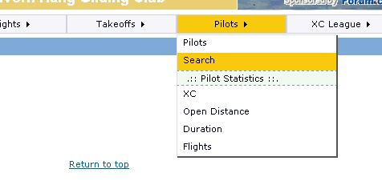
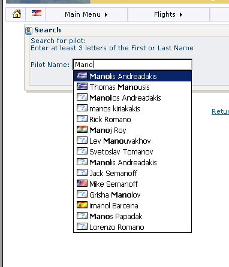
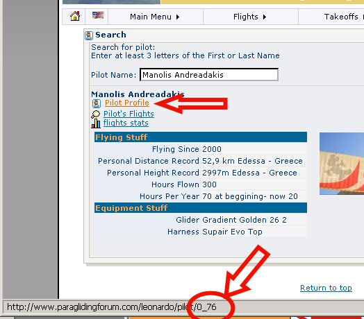
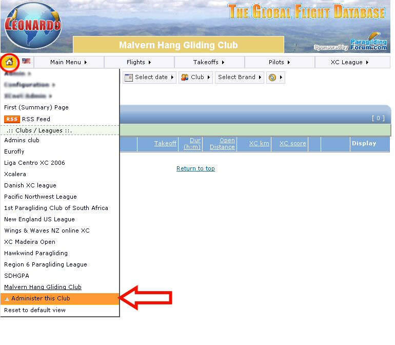
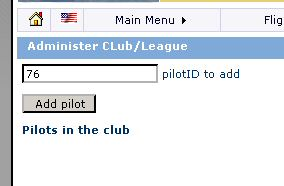
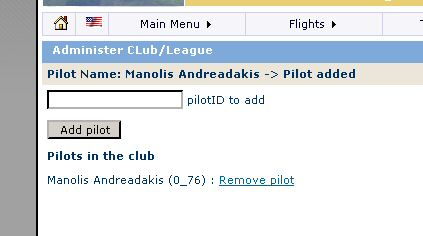

First of all you have to collect the userIDs of the pilots you want to add.
This is easy and can be done from "Pilots"=>"Search"

Type in the first letters of the Pilot's first or last name

Select the pilot from the dropdown

Put your mouse over "Pilot Profile as shown in image - No need to click on it, just hover the mouser over.
Then look at the bottom bar the address, the userID of the pilot is 76. Note this down and repeat for all pilots
you want to include
When done select your club and once selected use "Administer this club"

Insert PilotIDs one by one

Check that the correct pilot has been added.

NOTE: Be sure you have the agreement of the pilot in order to add him up.
Thats it ! The pilot's flights are automatically counted in your club's listings and scorings